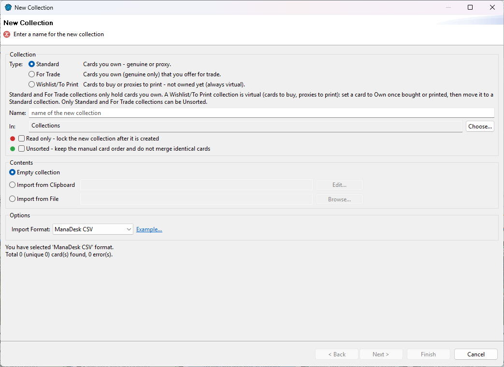

Creating collections and folders
Create a collection
Choose , or right-click Collections (or one
of its folders) in the Card Navigator and choose New Collection....

- Type — choose it first: Standard (cards you own), For Trade (cards you own and
offer for trade) or Wishlist/To Print (cards to buy or proxies to print). See
Decks and collections.
- Name — the name of the collection.
- In — the folder to create it in; Choose... picks another one.
- Options: Read only (lock it once created) and, for Standard and For Trade collections,
Unsorted (keep the manual card order).
- Digital — only while the digital cards are enabled: the collection only holds MTGO and Arena cards.
- Contents:
- Empty collection — click Finish.
- Import from Clipboard or Import from File — click Next to check the card
list before creating the collection. See Importing cards.
Create a folder
Right-click Decks, Collections or one of their folders and choose New Folder....
Decks go under Decks and collections under Collections.
Change a collection
Right-click it and choose Edit Properties...: rename it, change its type, lock it (Read Only),
make it unsorted, add a description. See the list of properties in
Decks and collections.
- Standard and For Trade can be switched. Changing to or from Wishlist/To Print is only possible while the collection
is empty (owned cards stay owned, virtual cards stay virtual). A read-only collection can't change type. The choice is
greyed when it isn't allowed, and its tooltip tells you why. To make wished cards owned, move them to a
Standard collection once bought.
- The Main collection can't be renamed, locked, made unsorted or
changed to another type.
Rename, move, delete
- Rename — right-click and Rename (or change the name in Edit Properties).
- Move — drag a deck, collection or folder onto another folder of the same side.
- Delete — right-click and Delete. If the list holds cards you own, ManaDesk offers
three choices:
- Disband — move the owned cards to the Main collection, then delete the list;
- Delete — delete the list and every card in it;
- Cancel.
Fill an existing collection from a list
Right-click the collection and choose Import into.... See Importing cards.
See also: Decks and collections ·
Adding and editing cards